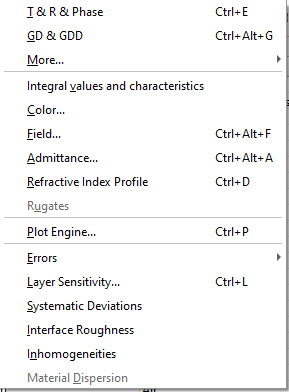

Analysis Menu
- Evaluation
- Filter mode
- Group Delay and Group Delay Dispersion
- Ellipsometric Angles
- Layer Absorptance
- Taper/Wavefront Evaluation
- Additional Evaluation windows
- Integral values and characteristics
- Digitize Plotted Data
- Color Evaluation
- Electric Field Evaluation
- Admittance Evaluation
- Refractive Index Profile Evaluation
- Zeroes and Poles
- WDM Filter GD Performance
- Rugates
- Plot Engine
- Errors Analysis
- Error Yield Analysis
- Worst Case
- Layer Sensitivity
- Systematic deviations
- Interface Roughness
- Inhomogeneities/Interlayers
- Pulse Analysis
- Material Dispersion Evaluation
Analysis Menu
This menu provides access to various OptiLayer Evaluation Tools. Most of these tools can be activated by keystrokes (shown in parentheses after the command names).

The Evaluation command starts the evaluation procedure, plots the results, and evaluates a merit function if a target is present. Seven types of evaluated characteristics can be chosen:
/ T & R & Phase (also accessible with Ctrl+E key and from the toolbar) displays the transmittance, reflectance, and phase characteristics of the current design. Specific characteristics to be displayed are chosen with the / Plots command in the Options menu.
GD & GDD (accessible with Ctrl+Alt+G keys) displays Group Delay and Group Delay Dispersion characteristics. Specific characteristics to be displayed can be selected using the Plots command in the Options menu.
GD & R, T displays R and/or T together with GD characteristics in one window using two y-axes.
GDD & R, T displays R and/or T together with GDD characteristics in one window using two y-axes.
Ellipsometric Angles (Ctrl+S) displays Ellipsometric Angles Psi and Delta as functions of wavelength or angle of incidence. Specific characteristics to be displayed can be selected using the Plots command in the Options menu.
UDT displays / User-Defined Target as a function of wavelength or angle of incidence. A target with one or several UDT should be loaded to memory before opening this evaluation window.
Layer Absorptance… displays the values of layer absorptances in individual layers of the design.
Additional evaluation windows with independent plot settings can be opened. It is convenient to use this option when spectral characteristics are to be evaluated in several separate spectral bands, or when it is required to analyze these characteristics using different scales for each characteristic in different parts of the specified spectral region. The characteristics to be evaluated and plotted are set independently for each of these three groups in the Analysis Options menu.
The Integral values and characteristics command allow for the calculation and monitoring of various numerical values: Merit Function and its components, Integral values, various / Color characteristics, averaged values over a wavelength region or a region of angles of incidence, and averaged values over 2D regions [wavelength x AOI].
The Color… command calculates color characteristics of the design.
The Field (Ctrl+F) command displays a plot of the electric field intensity inside the design as a function of physical thickness.
The Admittance (Ctrl+A) command displays an Admittance diagram of the design currently loaded in memory.
The Refractive Index Profile (Ctrl+D) command shows the refractive index profile of the design as a function of its thickness.
The / Zeroes and Poles… (Scientific mode) feature is an advanced tool in OptiLayer software for detailed analysis of the relationship between intensity and phase spectral characteristics. It enables the finding of zeroes and poles of the amplitude reflection coefficient in the complex wavenumber plane. The Zeroes and Poles Setup window allows adjustments of various settings connected with zeroes and poles calculations.
The WDM Filter GD Performance (Ctrl+Alt+W, Scientific mode) is another advanced feature of OptiLayer software that allows the user to analyze the relationship between the steepness of the WDM filter transmittance band slope and ripples of its GD and GDD spectral dependencies.
The Plot Engine (Ctrl+P) starts a presentation-quality graphics routine that allows the user to plot various design characteristics in a flexible format.
The Error Analysis (Ctrl+Alt+E) command opens the Error Analysis Setup window. This window allows the user to set levels of layer thickness and index variations that can occur during the deposition process and analyze the influence of these manufacturing errors on a specific spectral characteristic of the design. The spectral characteristic to be analyzed is chosen using edit boxes displayed in the window. The number of statistical tests can be entered in the corresponding edit box. The Corridor Probability value specifies the probability value for estimating the corridor of spectral characteristic deviations, ensuring that the perturbed design lies inside this corridor with the specified probability.
The Error Yield Analysis (Ctrl+Alt+Y) command opens the Error Yield Analysis Setup window. This allows the user to set levels of layer thickness and index variations that can take place during the deposition process and estimate the production yield of the design. Before running the Error Yield analysis, it is necessary to load the so-called range target.
The Worst Case Analysis (Ctrl+Alt+O) command is similar to the Error Analysis command but provides the worst-case estimate of the influence of manufacturing errors on design spectral characteristics.
The Layer Sensitivity (Ctrl+L) command provides the user with a relative ranking of the design merit function sensitivity to errors in individual layer thicknesses. The layer assigned the sensitivity order 1 and a relative sensitivity of 100% is the most sensitive one. The relative sensitivities of all other layers are calculated with respect to the sensitivity of this layer.
The Systematic Deviations command allows the user to analyze the influence of systematic deviations in layer thicknesses and/or refractive indices. These deviations can be specified for individual layer thicknesses and material refractive indices.
The Interface Roughness command evaluates the effect of small-scale and large-scale roughness on the spectral characteristics of the current design.
The Inhomogeneities/Interlayers command allows the user to set levels of layer bulk inhomogeneity and interlayer thicknesses to evaluate spectral characteristics considering these effects. The degree of inhomogeneity Delta specifies the level of bulk inhomogeneity. Interlayer thicknesses can be specified in nanometers or angstroms, with refractive indices calculated as a 50%/ /50/ % mixture of surrounding materials using Bruggemann’s formula.
The Pulse Analysis command enables the study of the reflection or propagation of short pulses. By specifying input pulses in the frequency domain, users can compute and display temporal shapes of the input and output pulses, their autocorrelation function, and possible time behavior of the electric field.
The Material Dispersion command evaluates the total phase, group delay (GD), and group delay dispersion (GDD) accumulated due to propagation through dispersive media.
The Broadband Monitoring Simulation command allows the user to investigate designed coatings concerning deposition with the help of a broadband monitoring device.
The WDM Errors Analysis command enables the simulation of WDM filter performance obtained by deposition with optical single-wavelength monitoring at the filter’s central wavelength. Typical errors of the deposition process are simulated for analysis.